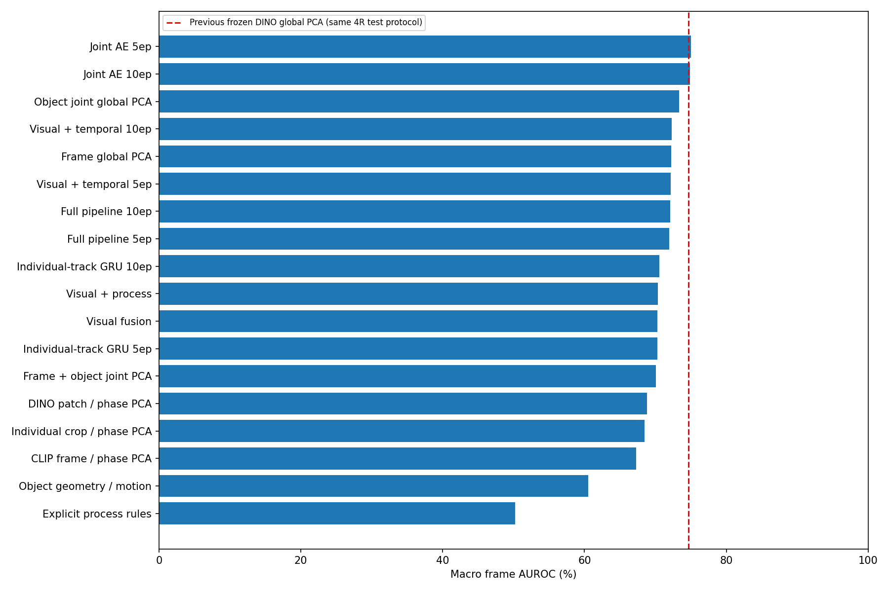
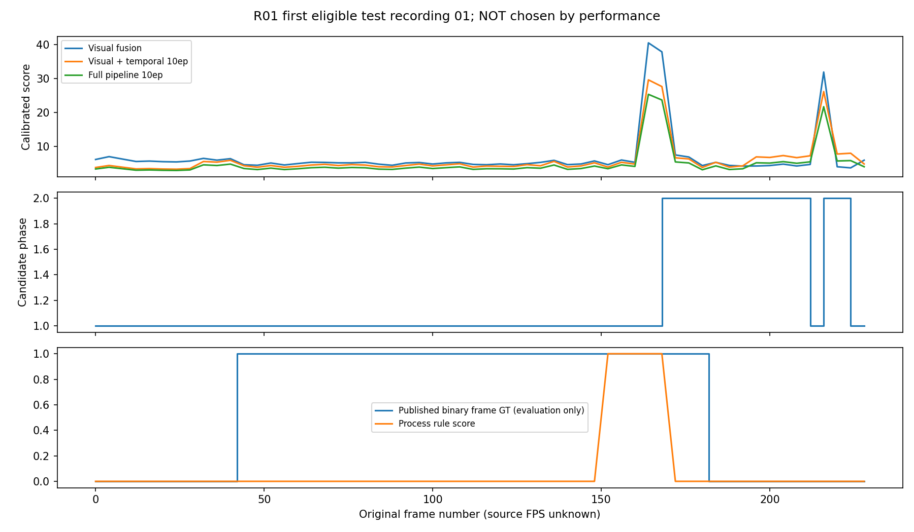
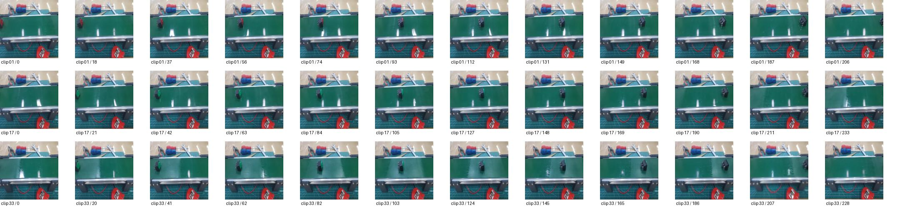
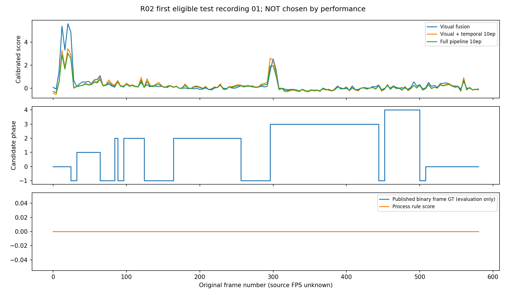
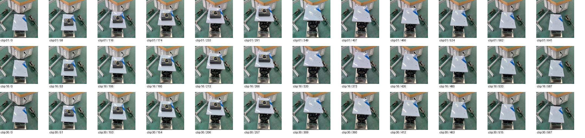
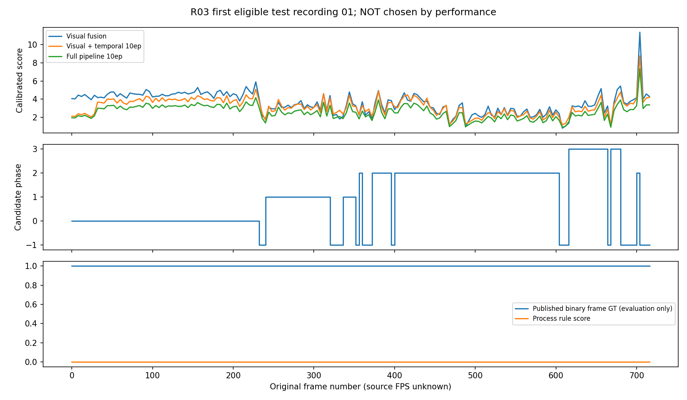
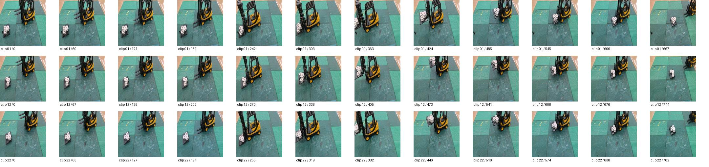
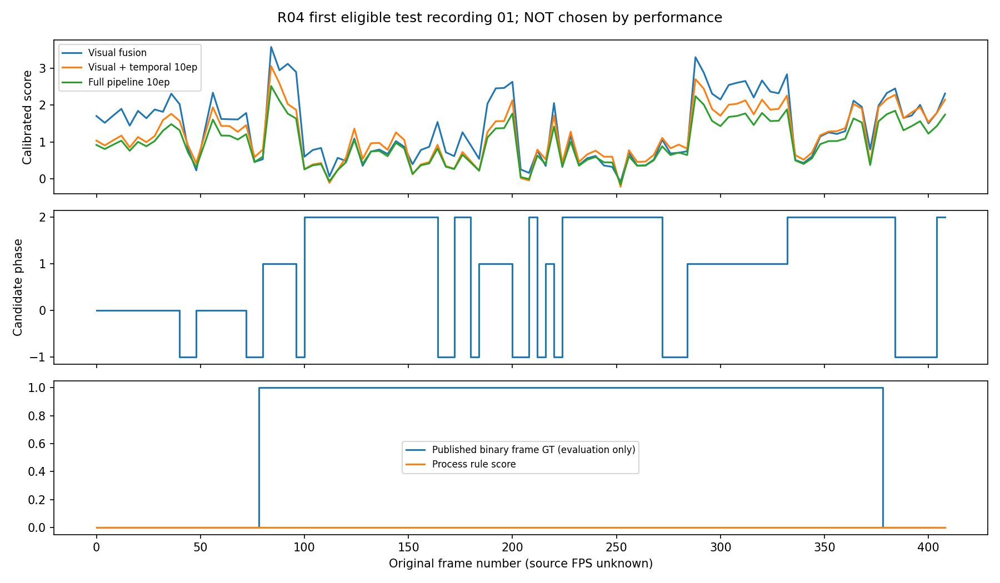
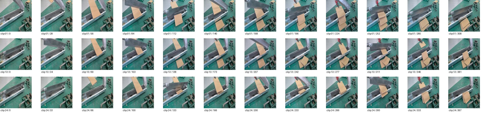

1~13단계 구현 / R01~R04 / 정상-only 학습 / 72개 비교. 공정 규칙은 사람의 확인 전 후보이며, 위치 정확도와 상용 범용성을 검증한 결과는 아닙니다.
| 방법 | 평균 AUROC | 정상 테스트 오경보율 |
|---|---|---|
| joint_ae_5 | 75.01% | 16.30% |
| joint_ae_10 | 74.87% | 16.91% |
| object_global_no_phase | 73.32% | 12.08% |
| spatial_temporal_10 | 72.31% | 18.57% |
| frame_global_no_phase | 72.21% | 12.26% |
| spatial_temporal_5 | 72.14% | 18.26% |
| full_pipeline_10 | 72.08% | 18.34% |
| full_pipeline_5 | 71.96% | 18.21% |
| track_forecast_10 | 70.56% | 16.09% |
| visual_process | 70.35% | 17.15% |
| visual_fusion | 70.31% | 17.43% |
| track_forecast_5 | 70.30% | 15.57% |
| frame_object_joint | 70.05% | 15.56% |
| patch_phase_only | 68.82% | 1.60% |
| crop_only | 68.44% | 10.84% |
| frame_only | 67.27% | 14.22% |
| motion_only | 60.52% | 4.85% |
| explicit_process_only | 50.22% | 0.23% |

첫 유효 테스트 영상. 영상 속도는 시연용 10 FPS.


검토할 규칙 후보첫 유효 테스트 영상. 영상 속도는 시연용 10 FPS.


검토할 규칙 후보첫 유효 테스트 영상. 영상 속도는 시연용 10 FPS.


검토할 규칙 후보첫 유효 테스트 영상. 영상 속도는 시연용 10 FPS.


검토할 규칙 후보